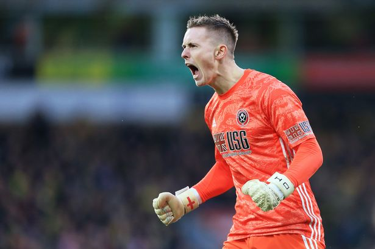
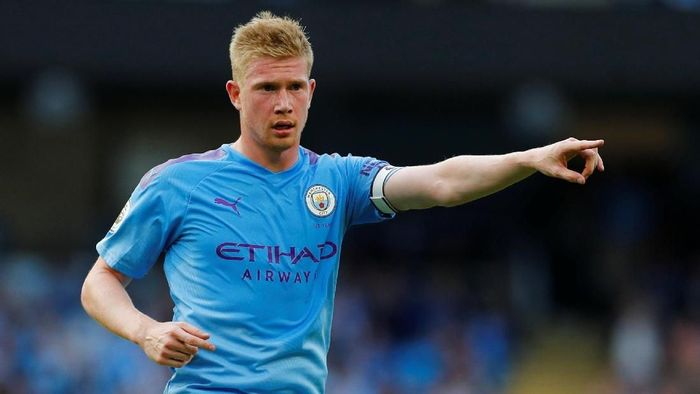

Ini Bererapa Catatan Matchweek primer league pekan ke 19
- catatan dibawah ini sangat menarik karena beberapa pemain berasal dari inggris.
- Jamie vardie tops skor sementara
- clean sheets dean henderson
- Asis terbnayak De Bruyne
- passes terbnayak van dijk
straiker asal inggris ini mampu memimpin sementara top skor, dengan perolehan 17, unggul 6 gol dari tammy abraham, dengan impresiv penamilan vardy musim ini mampu membawa licester menduduki peringkat 2 sementara

goalkeeper berkebangsaan inggirs, ternayata produk dari Man. United, sekarang dipinjamkan di sheffield united, dia berhasil meraih clean seet sebanyak 7 kali, jumlah itu disamai oleh Nick pope dari burnly dan kasper schmeichel dari leichester, mengingat usianya yang masih 22 tahun, besar kemungkinan potensinya akan terus berkembang

pemain kaki kaca yang satu ini kerap menjadi pilihan utama guardiola, meskipun rentan cedera de bruyne memiliki visi bermain yang bagus, hal iku mampu membawa city menjuarai liga inggris 2kali berturut- turut pada musim, kemarin saat ini city kualahan menghadapi the reds. total pemain berwajah baby face ini bermain sebanyak 137 dan mencatatkan 56 asis dan pada musim ini sebnyak 10 asis
menariknya di daftar top assis muncul bek sayap milik liverpool trent alexander arnorld, dengan 6 asis
kapten tim nasional belanda dengan tinggi 193cm berhasil mencatatkan 1,297 operan, ini catatan yang aneh bagi seorang bek.tackle suksesnya hanya 72 %, meskipun mendapat kandidat pemain terbaik, bagi saya vidic tetaplah ada dihati